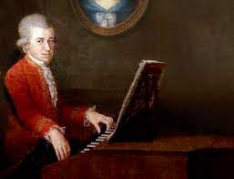
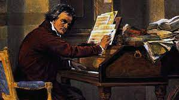

The piano was invented by Bartolomeo Cristofori (1655-1731) of Italy. The piano was founded on earlier technological innovations in keyboard instruments. Pipe organs have been used since antiquity, and as such, the development of pipe organs enabled instrument builders to learn about creating keyboard mechanisms for sounding pitches. In the period from about 1790 to 1860, the Mozart-era piano underwent tremendous changes that led to the modern structure of the instrument. This revolution was in response to a preference by composers and pianists for a more powerful, sustained piano sound. Two of the most influencial people when it came to the prosperity of the piano was Mozart and Beethoven.
Ludwig van Beethoven, shown right, is a german composer, the predominant musical figure in the transitional period between the Classical and Romantic eras.Like other composers of his generation, Beethoven was subject to the influence of popular music and of folk music, influences particularly strong in the Waldstein ballet music of 1790 and in several of his early songs and unison choruses. Heavy Rhineland dance rhythms can be found in many of his mature compositions; but he could assimilate other local idioms as well—Italian, French, Slavic, and even Celtic.


On the left we have Wolfgangus Theophilus Mozart. Mozart’s music, like Haydn’s, stands as an archetype of the classical style. Mozart was a versatile composer, and wrote in every major genre, including symphony, opera, the solo concerto, chamber music including string quartet and string quintet, and the piano sonata. He almost single-handedly developed and popularized the classical piano concerto.